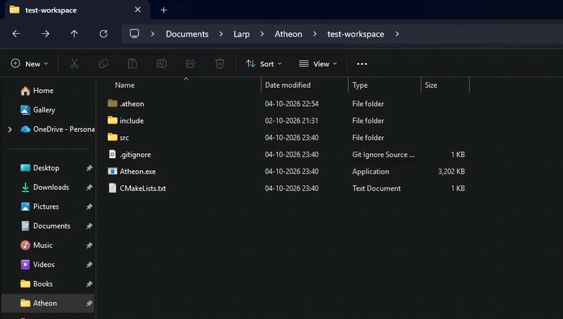
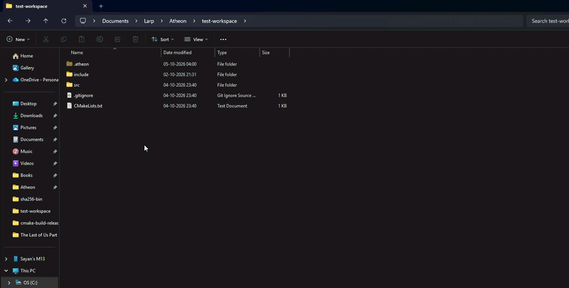
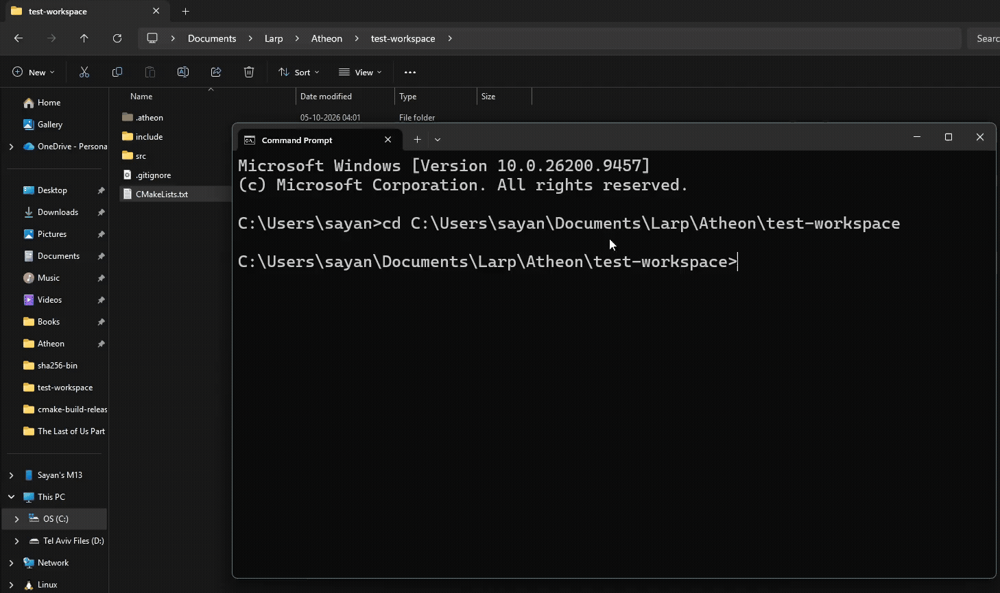
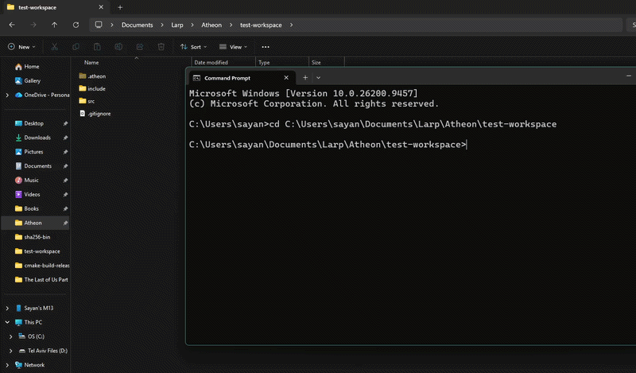

Why I built this
A while ago I wrote a SHA-256 generator in C++: give it a file, get back a 64-character fingerprint. Change one byte and the whole fingerprint changes. Same content, same fingerprint, every time.
Then it clicked that this single property is most of what Git is built on. If a fingerprint identifies content, you can store content by its fingerprint, compare two versions by comparing two short strings, and build entire histories out of those strings.
So I set myself some rules: C++17, standard library only. No external hashing or compression library. The point wasn't to replace Git, it was to understand it. The result is Atheon.
(And yes thats a refrence to the Vault of Glass raid from Destiny 2)
The big picture
Before any command makes sense, you need to know what Atheon stores. Everything lives in a hidden .atheon/ folder:
.atheon/
├── HEAD "ref: refs/heads/alpha"
├── index the staging area
├── refs/heads/ one file per branch, containing a commit hash
└── objects/ everything else, stored by hash (objects/ab/cdef...)There are only three kinds of objects, and all three are named by their SHA-256 hash:
| Object | What it holds |
|---|---|
| Blob | The contents of one file |
| Tree | A directory listing: names pointing to blobs or to other trees |
| Commit | A pointer to one root tree, a pointer to the parent commit, a timestamp, and a message |
Because commits point to their parents, history is a chain:
C3 ──▶ C2 ──▶ C1One nice side effect of naming things by content: if two files are identical, they hash the same, so Atheon stores them once.(Saving storage)

The commands
I gave every command its own name and its own module. Here's the mapping to Git:
| Atheon | Git equivalent | What it does |
|---|---|---|
vault |
init |
Creates the repository |
conflux |
add |
Stages files |
anchor |
commit |
Records a snapshot |
timestream |
log |
Shows history |
oracle |
status |
Compares committed, staged, and working files |
timegate |
checkout |
Travels to an older commit or a branch |
[If it wasn't clear, I LOVE Destiny 2!]
vault: starting a repository
The simplest command, and the one that sets the rules for everything else. It creates .atheon/, objects/, and refs/heads/, then writes the HEAD file:
ref: refs/heads/alphaHEAD doesn't contain a commit hash. It points to a branch name, and the branch file points to the commit. That extra hop is what makes branches cheap: moving to a new commit means rewriting one tiny file.
On Windows, vault also marks the folder hidden with SetFileAttributes, behind an #ifdef so the code still compiles elsewhere.
conflux: staging
conflux takes a file, or . for everything, and gets it ready to commit. This is where my SHA-256 generator came back in.
Step 1: Guards. It checks the repo exists and that HEAD is attached to a branch (more on why in the timegate section).
Step 2: Collect files. Walking the project folder uses an explicit stack of directories instead of recursion. Ignored paths, from a .atheonignore file plus .atheon/ itself, are skipped.
Step 3: Hash in parallel. This is the part I'm proudest of. Atheon spawns a number of worker threads (half the machine's hardware threads), and they share one atomic counter:
const size_t i = global_index.fetch_add(1);
if (i >= n) break;Each thread grabs the next unclaimed file index, hashes it, and stores the result in a slot that belongs only to that index. There are no locks, and no pre-split work. A thread that lands a huge file doesn't hold up the others, because the rest simply keep claiming the next number.
Each file is read in 128 KB chunks and fed to SHA256::update(), so memory use stays flat whether the file is 1 KB or 1 GB. This is why my generator's streaming design (update many times, final once) mattered. These were the core concepts I learnt from my previous SHA-256 project that I implemented here.

Step 4: Write blobs. A blob is the header blob <size>\0 followed by the raw bytes, stored at objects/ab/cdef... (first two hex characters as the folder name, to keep folders small). If the blob already exists and the file is unchanged, it's skipped.
Step 5: Write the index. One line per file:
<hash> <size> <mtime> <path>It's written to index.temp and then renamed over index, so a crash in the middle can't leave a half-written index behind.
A small detail I enjoyed: C++17 has no clock_cast, so converting a file's modification time to Unix seconds means subtracting file_clock::now() and adding system_clock::now(). It's a hack, but it works on both Windows and Linux.
A known problem I'm fixing in V2. The second phase, which turns hashes into blobs and index entries, also uses several threads, and they all write into one shared std::map. That's a data race. It works on small projects, but it's undefined behavior.
.atheonignore
Once conflux . was working, I immediately ran into a practical problem: I didn't want build artifacts, editor temp files, or the .atheon/ folder itself showing up as tracked files. So I added a .atheonignore file, which works exactly like .gitignore but is parsed by Atheon at the start of any file-walk.
The implementation is straightforward. When conflux is about to walk the project directory, it first reads .atheonignore line by line and builds a set of patterns to skip:
- Blank lines and lines starting with
#are treated as comments and ignored. - Everything else is stored as a ignore rule.
Then, during the directory walk, before pushing a discovered path onto the stack, Atheon checks whether the entry's name or its path relative to the project root matches anything in that set. .atheon/ itself is always skipped unconditionally, so the object store can never accidentally commit itself.
# .atheonignore example
build/
*.o
*.exe
.vscode/It's a small feature but it made Atheon feel like an actual usable tool rather than a toy. This also took a durprisingly long time to build with all the edge cases.
anchor: committing (My brain fried itself while writing this code)
The index is a flat list of paths, but a commit needs nested trees, one for each directory. anchor bridges that in two steps.
Build the tree in memory. Each path like src/main.cpp is split on /, and the program walks down creating folder nodes (a std::map from name to child) until it reaches the file, which becomes a leaf holding its blob hash.
Write trees bottom-up. Writing the whole logic for a tree was a very tough experience and something I feel like taught me a lot about these data structures. Here a function recurses through the tree: a leaf just returns its blob hash, while a folder builds a listing of its children, one per line:
100644 main.cpp\0<blob hash>
040000 src\0<tree hash>then hashes that listing and stores it as a tree object. Children must be hashed before their parent, because the parent's content includes the children's hashes. So a change to one file changes its blob hash, which changes its folder's hash, which changes every folder above it up to the root.
That has a very useful consequence: the root tree hash represents the entire project. So “nothing to commit” is just one string comparison between the new root hash and the last one.
If something did change, the commit object is written:
tree 9f2c...e1
parent 4ab7...03
timestamp 1759650000
message add stagingIt's hashed like everything else, and then the branch file is updated to point at it.
The bug that broke history. At one point, after refactoring how the parent hash is read, every commit silently lost its parent. Commits worked, and status looked fine, but timestream only ever showed one commit. The cause was reading into a string I'd just cleared, so the read buffer had size zero and read nothing. Nothing crashed, and the output was just quietly wrong.
timestream: the log
The simplest command to explain: it's a linked list traversal.
- Read HEAD. If it's
ref: ..., open that branch file to get the newest commit hash. - Open the commit object, read its
parent,timestamp, andmessagelines. - Follow the parent hash. Repeat until a commit has no parent.
Then print the list newest-first with the time formatted. It also works when HEAD holds a raw hash, which is what happens after checking out an old commit.
oracle: the status command
Out of all the commands, oracle took the most thinking, because it compares three states of the project:
- Committed: what the last commit says
- Staged: what the index says
- Working directory: what's actually on disk right now
Comparing committed against staged gives “changes to be committed”. Comparing staged against disk gives “changes not staged”. Each comparison sorts files into new, modified, and deleted.
Loading the committed state means walking the tree objects with a stack and building a path → hash map for the last commit. Loading the working directory means walking the folders.
The speed trick: re-hashing every file on every status would be slow. So Atheon first compares each file's size and modification time with what the index recorded, and only re-hashes files where those differ. If the hash still matches after all, the file counts as unchanged.
I also wrote mini_oracle(), a version that just answers “is the project completely clean?” with yes or no. Checkout uses it. Honestly, it duplicates most of oracle's logic, and merging the two is on my V2 cleanup list.

timegate: checkout
timegate rewrites your working folder to match any earlier commit, or a branch.
- Check for a clean project using
mini_oracle(). If there are uncommitted changes, it asks before overwriting anything. - Load the target commit's files into a
path → blob hashmap by walking its trees. - Delete files that Atheon was tracking but the target commit doesn't have. It decides this from the index, so files Atheon never tracked are left alone. I only delete what I know I'm responsible for.
- Restore each file. For every file in the target commit, it creates parent folders, opens the blob, skips the
blob <size>\0header by reading up to the null byte, and streams the rest into the working file in 128 KB chunks. - Rewrite the index to match, so
oraclereports a clean state afterwards. - Update HEAD.
That last step is the interesting one and the one that took the msot time to understand and write for me. If you check out a branch name, HEAD becomes ref: refs/heads/<name>, so you're attached to a branch. If you check out a commit hash, HEAD holds the raw hash: a detached HEAD.
While detached, Atheon refuses to stage or commit. If it allowed commits there, they'd belong to no branch, and the moment you moved away they'd be unreachable. I'd heard “detached HEAD” in Git as a scary phrase; building it myself, I finally understood why (I genuienly hate it). Refactoring the whole codebase to support the detached HEAD was also another chore but nonetheless it was done.
[I have to mention though watching all the old files restore was VERY SATISFYING to watch]
Two ways to use it
main.cpp supports both a command-line interface and an interactive menu:
atheon conflux .
atheon anchor -m "first commit"
atheon oracleIf you pass arguments, it dispatches on the first one. If you pass nothing, it shows a numbered menu. Because each command is its own function, both interfaces call the exact same code, and only checkout needed a shared helper, since the menu and CLI both had to resolve a hash or branch name.

Next Goals for Version 2 of Atheon
- Fix the shared-map race in
conflux(above). - Merge
oracleandmini_oracleso the comparison logic lives in one place. - Hash the blob header too. Right now a blob's name is the hash of the file contents only, while the stored object also has a header. Git hashes header plus content, which lets you verify an object later by re-hashing exactly what's on disk. I'd like an integrity-check command, and that design makes it easier.
- Add compression, branch creation, unstaging, commit authors, diffs, and eventually merge (YES I HATE MYSELF THAT MUCH)
What I learned
As much as I would love to talk about all the technical things I learned while making Atheon, the most valuable lesson was actually a shift in my mindset. Before taking on this challenge, I used to look at large-scale software projects as monumental, almost impossible feats. The sheer scale and complexity of building a version control system—even a mini version of something as intricate as Git—felt completely out of my depth. However, once I actually took the plunge, it all slowly started making sense. By breaking down every single command into its smallest, most manageable logic components, the impossible suddenly became achievable. Building Atheon taught me that no system is too complex to build; it is simply a collection of small, solvable problems stacked together.
So I guess if there is anything I take away from this project is the fact that nothing is too complex to build with enough patience. All you gotta do is just LET IT HAPPEN.
Try it
- Atheon: github.com/SayanNnd/Atheon
- The SHA-256 generator it started from: github.com/SayanNnd/SHA-256-Generator
If you read the code and spot something I got wrong, I'd genuinely like to hear about it.
And yes, always remember "Guardians Make Their Own Fate"